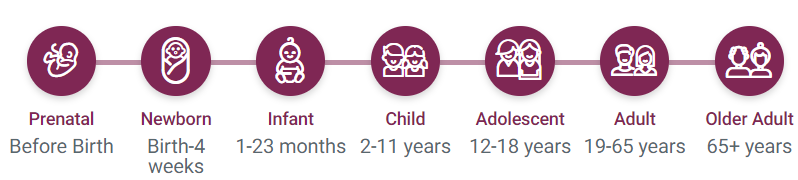

Contents
Clinical symptoms


Certain mutations are targeted with drugs like elexacaftor, ivacaftor, tezacaftor and their
combinations
Dietary supplement, Antibiotics, Penicillin and Cough medicine
Therapeutics
Diagnostics


Recent Research:
Resources:
Cystic fibrosis
Sinuses infections
Blockage of the intestine in a baby soon after birth
Clubbing of fingers and toes due to less oxygen getting to the hands and feet
Fever, which may include night sweats
Gastrointestinal symptoms, such as severe abdominal pain, chronic diarrhea, or constipation Jaundice
Low body mass index (BMI)
Delayed growth or puberty
Timeline of disease onset

Source: National Center for Advancing Translational Sciences
*Coloured age: Disease onset
Where it all started?
Click for Inheritance Pattern
Sweat (chloride) test, new born screening with immunoreactive trypsinogen (IRT)
Prevalence
(India)
Prevalence
(Global)
The estimated prevalence of CF is
1/43,321 to 1/100,323 in Indian population[1]
-
1. Kabra, S. K., Kabra, M., Lodha, R., & Shastri, S. (2007). Cystic fibrosis in India.
Pediatric Pulmonology, 42(12), 1087–1094. https://doi.org/10.1002/ppul.20677


GENTIGS
GENTIGS is a databse
Cystic fibrosis
Wolman Disease
Hypophosphatasia

Blood Disorder
Storage Disorder
Neurological Disorders
Others
© Tata Institute for Genetics and Society
Dashboard development & design:
Samruddhi Walaskar
Concept & lead:
Dr. Surabhi Srivastava
Data compilation:
RGD Team
For queries & feedback:
surabhi.srivastava@tigs.res.in
Aditional links-
Online Mendelian Inheritance in Man(OMIM)
-
Organization for Rare Diseases India(ORDI)
-
Indian Policy for Rare Genetic Disorders
-
TIGS Work
-
Indian Society of Hematology and Blood Transfusion (ISHBT)